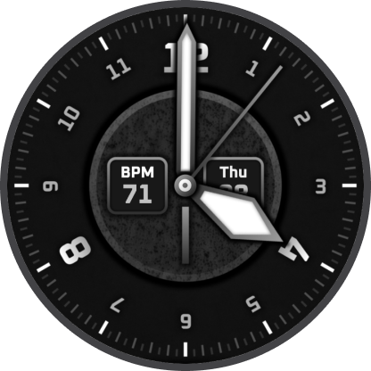
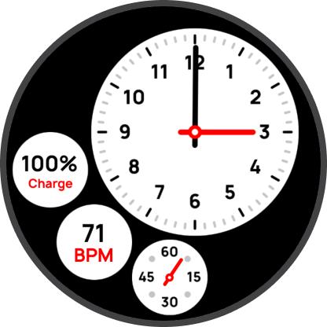
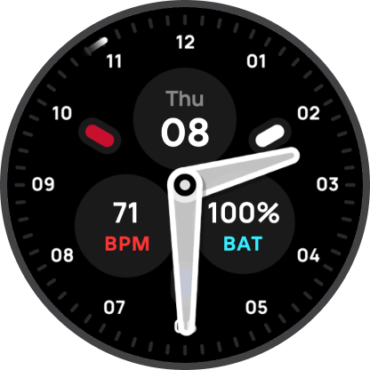
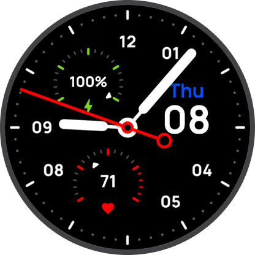
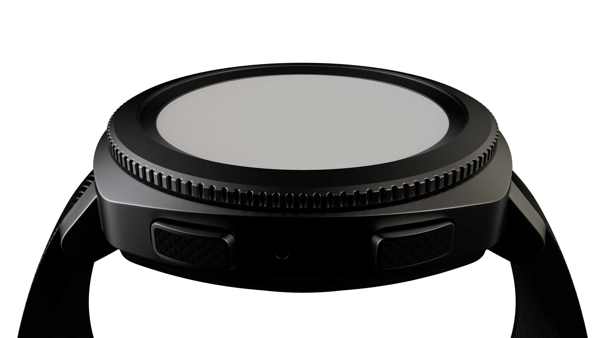
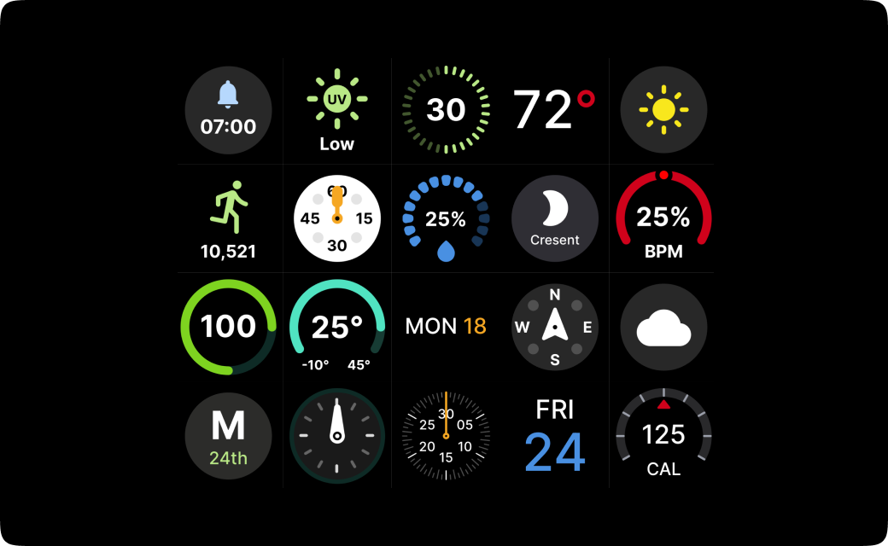

Classic
A vintage dial with heartrate, battery, and date complications. Nautical, wartime-inspired styling with character and readability for the traditionalist.

A vintage dial with heartrate, battery, and date complications. Nautical, wartime-inspired styling with character and readability for the traditionalist.

Clean, minimal, and true to the Olympus brand. A white dial that keeps things simple, timeless, readable, and easy to wear every day.

Bold, space-age styling with a tripolar layout. Battery, heartrate, and date sit among rotating particles that echo the sweep of a seconds hand.

Designed with sport in mind, using three clear complications in a tripartite layout. Modern, purposeful, and easy to read when you’re on the move.
Olympus wants creators to be able to showcase their watch faces in the best possible light. That is why we designed the Creators Toolkit.

The built-in Sketch file provides a comprehensive library of ready-to-use UI complications. Treating these pre-made elements like scalable components allows designers to rapidly wireframe and lay out their own custom watch faces.

Olympus is proud to donate 100% of the proceeds from the Creators Toolkit to the Royal National Institute of Blind People (RNIB). Your purchase directly supports one of the UK’s leading charities in empowering blind and partially sighted individuals to transform their lives.
Using Photoshop designers can superimpose their face onto a 3D mock-up, giving them and their users a new perspective. Within this kit, you will find both the Galaxy Gear and Galaxy Active smartwatch mockups.

Using Sketch, designers can leverage the programs tools for creating circular interfaces. It’s regarded as the best tool for creating vector watch faces to develop mock-ups and lay out their faces with pre-made elements.